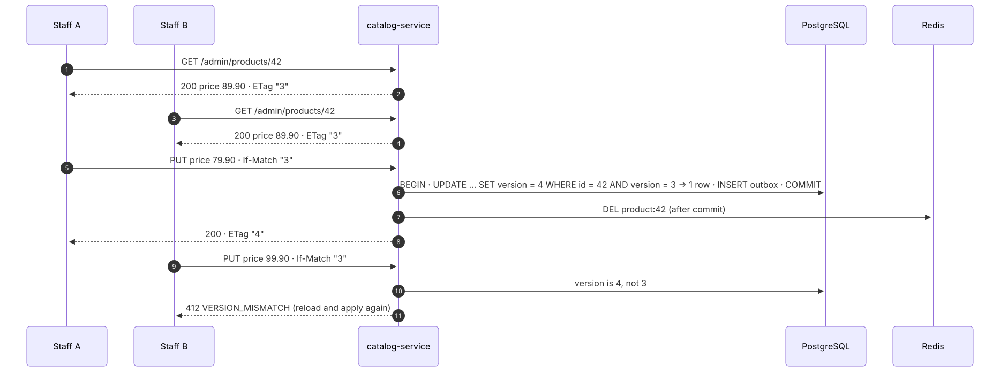
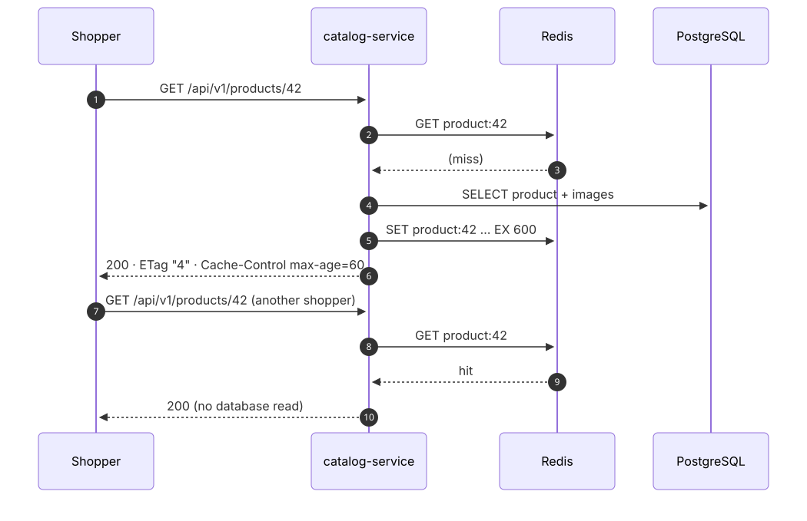
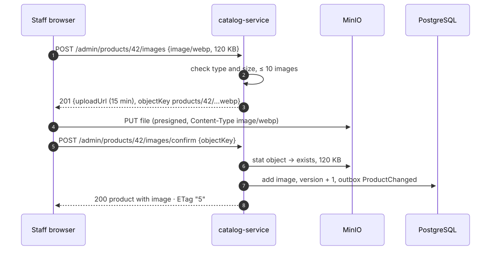

catalog-service: low-level design#
Part of the e-commerce system design. Animated version: walkthrough.
1. Responsibilities#
| Does | Does not |
|---|---|
| Own products, categories, prices, attributes and image references | Search or filter across products (search-service does) |
| Let staff edit products without overwriting each other's changes | Hold stock (inventory-service does) |
| Sign short-lived upload URLs; record images once they exist | Receive image bytes: they go straight to object storage |
Publish every change as catalog.ProductChanged |
Call any other service |
| Answer price lookups for carts |
2. Guarantees#
| Guarantee | How |
|---|---|
| No lost updates | Every product has a version. Reads return it as a strong ETag; PUT requires If-Match (428 without it) and runs UPDATE … WHERE id = ? AND version = ?. Zero rows updated → 412 |
| A change and its event are never separated | The product row and the outbox row are written in one transaction; the relay publishes afterwards (at least once) |
| Consumers can order events | ProductChanged carries the whole product and its catalogVersion; search keeps only the highest version |
| The cache never outlives a committed change by more than an instant | Cache-aside: entries are evicted after the transaction commits, a read that overlapped the commit does not write its old copy back, and entries expire after 10 minutes ± 10 % in any case |
| Redis is optional | Any cache error is logged and read as a miss; reads fall through to PostgreSQL |
| Only real uploads are attached | Confirm checks the object exists in storage (422 IMAGE_MISSING otherwise), its key belongs to the product, and its size is at most 5 MB |
| Shoppers see only ACTIVE products | The public API answers 404 for drafts and archived products |
3. Module diagram#

4. Interaction diagram#

5. Sequences#
Edit a product without overwriting a colleague#

Read a product (cache-aside)#

Upload an image#

6. State diagram#

7. Data model (PostgreSQL)#
Schema: V1__catalog_schema.sql.
| Table | Key | Notes |
|---|---|---|
categories |
id |
parent_id forms the tree; slug unique |
products |
id |
sku unique; attributes JSONB with a GIN index (jsonb_path_ops); partial index on category_id for ACTIVE products; version for optimistic locking |
product_images |
(product_id, position) |
Object keys in MinIO; deleted with the product |
outbox |
id (UUIDv7, the event id) |
Partial index on unpublished rows; published rows purged after 7 days |
shedlock |
name |
One replica runs the purge job |
8. Scaling and performance#
- Pods: stateless, 2–10 replicas. Reads dominate (product pages); writes are staff edits, a few per second at most.
- Reads: a cache hit is one Redis
GET; the 60-secondCache-Controllets the edge cache popular products too. A miss is two indexed queries (product, images); concurrent misses for one product in a pod share one load (SingleFlight), and the expiry is spread by ± 10 % so entries cached together do not expire together. - Connections: through
pgbouncer-catalogin transaction mode; 10 pods × 20 client connections share 30 server connections. - Price lookups: cart-service batches up to 100 SKUs into one
sku IN (…)query and caches the answers for 30 s itself. - Outbox relay: every replica polls every 100 ms;
FOR UPDATE SKIP LOCKEDgives each a separate batch of up to 500 rows. - Images: bytes never pass through the service, so uploads do not consume its threads or memory.
9. Failure handling#
| Failure | Behaviour |
|---|---|
| Redis down | Cache reads and evictions log a warning; reads go to PostgreSQL. Stale entries left by a failed eviction expire within 10 minutes |
| Kafka down | Writes still succeed; outbox rows wait and are published when Kafka returns (search is behind, not wrong) |
| MinIO down | Upload start and confirm fail with 500; products and reads are unaffected |
| Upload never happens | Nothing is recorded; the signed URL expires after 15 minutes |
| Two editors at once | One gets 200, the other 412 and must reload |
| Crash after publish, before marking | The relay re-sends the batch; consumers ignore duplicates by event id and older versions by catalogVersion |
10. Tests#
| Test | Kind | Proves |
|---|---|---|
ProductTest |
domain | Versions go up by one per change; lifecycle transitions; price rules; SKU and slug formats; images ordered, idempotent, limited to 10 |
CatalogServiceTest |
application | Create writes product and event in one transaction; cache hits avoid the database; drafts hidden from shoppers; eviction happens after commit; a read that overlaps a committed edit does not re-cache the old version; a stale version is rejected with no event; a write that commits between the check and the update is still caught; upload confirmed only when the object exists |
SingleFlightTest |
application | 50 concurrent misses for one key load once; every waiter gets the loader's exception and the next miss loads again |
RedisProductCacheExpiryTest |
adapter | Expiry stays within ± 10 % of the base and differs between entries written together |
HexagonalArchitectureTest |
ArchUnit | Layering |
CatalogContainersIT |
PostgreSQL + Redis + Kafka + S3 (RustFS) | 428 without If-Match, 200 with the current ETag, 412 with a stale one; cache entry evicted; events with versions 1 and 2 on Kafka; real presigned upload to MinIO then confirm; price lookup; 401 and 403 for non-staff; SKU uniqueness |